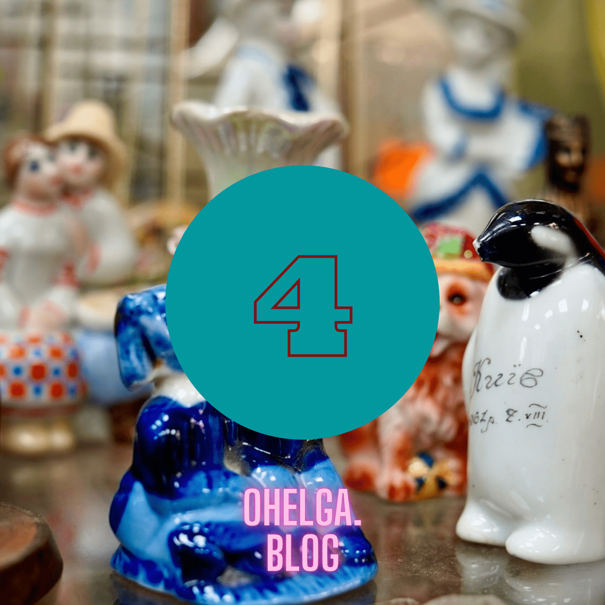

Det som är säkert är lika säkert som flugsmättan på flugan! Tomi saa viihdoin tietää millaista oli elää Öjassa 80-luvulla.
Lyssna på:
Apple Music:
Spotify:


Det som är säkert är lika säkert som flugsmättan på flugan! Tomi saa viihdoin tietää millaista oli elää Öjassa 80-luvulla.
Apple Music:
Spotify:
Kommentit / Kommentarer (9)
<p>Operasångrnas kantiga, kliniskt rena versioner är förstås musikvetaras favoriter men Carolas version kommer en aning närmare mig. En världsberömd trumpetist satt i SVT "Gokvällsoffan" för något år sedan. Han framträdde också med sin trumpet och spelade O Helga Natt. En ensam klockren trumpet utan "compskrammel" och "köryl". Nåt så vacker har jag aldrig hört.Den versionen finns tyvärr inte på nätet men skulle ni mot förmodan hitta den skulle jag gärna höra den på nytt.</p>
<p>Tack för detta! Väckte minnen av "Främling"-inspirerade lekar, och i Malax gick det till så här: Min kompis var Carola, som jag minns det med ett rosa-glittrigt hopprep som mikrofon. Jag var Carolas mamma, som klappade i händerna när Carola uppträtt.<br/>Men vad jag ville komma till var en aspekt av O, helgas text. Jag tänker alltid att det är "Folk, (i)fall du lever" (och det är det ju inte på riktigt, och jag glömmer alltid vad det är, men..För mig). Men: när jag lyssnar på Carolas version här, hör jag något annat,nämligen "Folk, fall du lede"! Detta föranledde nästan en pepparkaka o halsen och snabb googling av texten. </p>
<p>Carola har spelat in O helga natt flera gånger, första gången redan på EP:n Julefrid med Carola 1983 och den versionen tycker jag faktiskt bäst om https://www.youtube.com/watch?v=VsRsUAA02bA. Versionen från 1991 är ganska lik den, men det har lagts på en kör vilket gör den sämre. Hon har också spelat in flera julskivor i Betlehem under åren, där den här julsången finns med. Men jag tycker bäst om 1983-versionen från samma år då hon deltog i Eurovision första gången (en liten rättelse: hon var faktiskt bara 16 år gammal då), jag tycker om den här versionen just för att den saknar tingeltangel, nästan har demokänsla, men hennes unga röst har sån renhet, kraft och energi. Ni vet väl att hon kom femma i Eurovision året då Lordi vann?</p>
<p>Dansbandet stör men Carola är förstås ljuvlig. Å Mickey är ändå alltid bäst. </p>
<p>Vi ska kolla runt efter trumpetversionen! Undrar om instrumental kan vara lika bra som de sjungna, med tanke på tonen alltså?</p>
<p>Härligt minne, tack för det! Och så fint att Carolas mamma fick en så framträdande roll i det hela (jag minns henne främst från ett svartvitt foto i den beundrarbok som vi hade, där stod hon och pappan och kramade om Carola, som stod i sin pudelfrisyr i mitten <3). Hopprep låter bekant, men i Öja var det en hårborste (rund) som fick tjäna mikronfon :D<br/>Och jo, texter kan bli vådligt fel ibland! Fy för den lede!</p>
<p>Klart vi har stenkoll på Carola! Femman dock inte värd att nämna, för det året kom hon minsann inte ut med någon julskiva (men nog året där efter).<br/>Jag minns skivomslaget från julskivan 1983. Månne vi hade den hemma (som kassett?)</p>
<p>Jaaa, Mickey är bäst! Blunda-skaka-hår-och-dansa-med-händerna-i-luften-bäst! <3</p>
<p>Vi hade dem hemma som kassett. Fick i julklapp julen 83.</p>